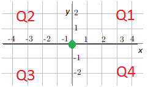
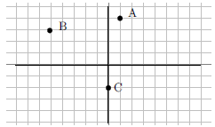
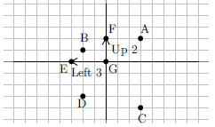
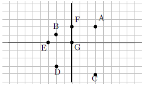

MAT-101: Module 2A Interpreting Graphs
Objectives:The Cartesian Coordinate Plane
Often, to get an idea of the behavior of an equation we will make a picture that represents the solutions to the equations. A graph is simply a picture of the solutions to an equation. Before we spend much time on making a visual representation of an equation, we first have to understand the basis of graphing. Following is an example of what is called the Cartesian coordinate plane (named in honor of the 17th century philosopher, mathematician and scientist, René Descartes).
|  | The plane is divided into four regions, called quadrants, by a horizontal number line ($x$-axis) and a vertical number line ($y$-axis). The quadrants are labeled Q1, Q2, Q3, and Q4 and proceed counterclockwise around the plane as shown in the graph at the left. Where the two lines meet in the center is called the origin, marked by the green point. This center origin is where $x = 0$ and $y = 0$. |
As we move to the right of the origin the numbers count up from zero, representing $x=1, 2, 3\dots$. To the left the numbers count down from zero, representing \(x = - 1, - 2, - 3\dots\). Similarly, as we move up from the origin the number count up from zero, $y = 1, 2, 3\dots$, and as we move down count down from zero, $y = -1, -2, -3, \dots$. We can put dots on the graph which we will call points. Each point has an "address" that defines its location. The first number will be the value on the $x$-axis or horizontal number line. This is the distance the point moves left/right from the origin. The second number will represent the value on the $y$-axis or vertical number line. This is the distance the point moves up/down from the origin. The points are given as an ordered pair $(x, y)$.
World View Note: Locations on the globe are given in the same manner, each number is a distance from a central point, the origin, which is where the prime meridian meets the equator. This "origin" is just off the western coast of Africa.
The following example finds the address or coordinate pair for each of several points on the coordinate plane.
Example 2A-1: Give the quadrant and coordinates of each point.|  | Notice that point A is in Q1 and point B is in Q2. Point C is not in a quadrant but is on the $y$-axis. Tracing from the origin, point $A$ is right 1, up 4. This becomes $A(1, 4)$. Point $B$ is left 5, up 3. Left is backwards or negative so we have $B( - 5, 3)$. $C$ is straight down 2 units. There is no left or right. This means we go right zero so the point is $C(0,-2)$. |
| $A(1, 4)\text{ is in Q1},B(-5, 3)\text{ is in Q2}$, and $C(0,-2)$ is on the $y$-axis | Our Solution |
Just as we can give the coordinates for a set of points, we can take a set of points and plot them on the plane.
Example 2A-2: Graph the points $A(3, 2), B( - 2, 1), C(3, - 4), D( - 2, - 3), E( - 3, 0), F (0, 2), G(0, 0)$
|
The first point, $A$ is at $(3, 2)$. This means $x=3$ (right 3) and $y =2$ (up 2). Following these instructions, starting from the origin, we get our point. Note that $A$ is in Q1. The second point, $B( - 2, 1)$, is left 2 (negative moves backwards), up 1. This is also illustrated on the graph. Note that $B$ is in Q2. |
|
The third point, $C(3, - 4)$ is right 3, down 4 (negative moves backwards). Note that $C$ is in Q4. The fourth point, $D(-2, -3)$ is left 2, down 3 (both negative, both move backwards). Note that $D$ is in Q3. |
The last three points have zeros in them. We still treat these points just like the other points. If there is a zero there is just no movement.
|  | Next is $E(-3, 0)$. This is left 3 (negative is backwards), and up zero, right on the $x$-axis. Note that $E$ is on the $x$-axis. Then is $F(0, 2)$. This is right zero, and up two, directly on the $y$-axis. Note that $F$ is on the $y$-axis. Finally is $G(0, 0)$. This point has no movement. Thus the point is the origin. |
|  | Our Solution |
The main purpose of graphs is not to plot random points, but rather to give a picture of the solutions to an equation. We may have an equation such as $y = 2x - 3$. To determine whether or not a point $(x,y)$ is a solution to a given equation, you substitute (or "plug in") the values into their corresponding variables in the equation and check to see that you get a true statement (both sides of the equation have equal values).
Example 2A-3: Determine if the point $(1,-1)$ is a solution to the equation $y = 2x - 3$
| $y = 2x - 3$ | Since $(1,-1)=(x,y)$, substitute $x=1$ and $y=-1$ in the equation. |
| $-1=2(1)-3$ | Simplify |
| $-1=-1$ | A true statement |
| The point $(1,-1)$ is a solution | Our Solution |
Example 2A-4: Determine if the point $(-9,7)$ is a solution to the equation $y = |x+5|+4$.
| $y = |x+5|+4$ | Substitute $x=-9$ and $y=7$ in the equation. |
| $7 = |-9+5|+4$ | Simplify: Inside absolute value first |
| $7 = |-4|+4$ | $|-4|=4$ |
| $7 = 8$ | NOT a true statement: 7 does not equal 8 |
| No, the point $(-9,7)$ is not a solution | Our Solution |
Example 2A-5: For the equation $Q = P^2-3$, find the $Q$-coordinate for each value of $P$ in the table.
|
We will plug each given $P$ value in the equation and solve for $Q$ | ||||||||||||
|
Find each $Q$-coordinate by replacing $P$ with the given value in the equation $Q = P^2-3$ $P=-3; Q =(-3)^2-3=(-3)(-3)-3=9-3=6$ $P=-1; Q =(-1)^2-3=(-1)(-1)-3=1-3=-2$ $P=0; Q =(0)^2-3=(0)(0)-3=0-3=-3$ $P=1; Q =(1)^2-3=(1)(1)-3=1-3=-2$ $P=5; Q =(5)^2-3=(5)(5)-3=25-3=22$ |
We may be interested in what type of solutions are possible with the equation $y = 2x - 3$. We can visualize the solution by making a graph of possible $x$ and $y$ combinations that make this equation a true statement. We will have to start by finding possible $x$ and $y$ combinations. We will do this using a table of values.
Example 2A-6: Graph $y=2x-3$. We make a table of values.
|
We will test three values for $x$. Any three can be used | ||||||||
|
Evaluate each by replacing $x$ with the given value $x=-1; y =2(-1)-3=-2-3=-5$ $x=0; y =2(0)-3=0-3=-3$ $x=1; y =2(1)-3=2-3=-1$ | ||||||||
| $(-1,-5), (0,-3), (1,-1)$ | These then become the points to graph on our equation | ||||||||
 |
Plot each point. In the next section, we will see that this particular equation determines a line. Thus, once the points are plotted on the graph, connect the dots to make a line. The graph is our solution |
What this line tells us is that any point on the line will work in the equation $y = 2x -3$. For example, notice the graph also goes through the point $(2, 1)$. If we use $x=2$, we should get $y =1$. Sure enough, $y =2(2)-3=4-3=1$, just as the graph suggests. Thus we have a picture of all the solutions for $y = 2x - 3$. We can use this table of values method to draw a graph of any linear equation.
Example 2A-7: Graph $2x-3y=6$. We will use a table of values.
|
We will test three values for $x$. Any three can be used | ||||||||
| $2(-3)-3y=6$ | Substitute each value in for $x$ and solve for $y$ | ||||||||
| $-6-3y=6$ | Start with $x=-3$, multiply first | ||||||||
| $\underline{+6\hphantom{12345}+6}$ | Add 6 to both sides | ||||||||
| $-3y=12$ | Divide both sides by $-3$ | ||||||||
| $\overline{-3}\hphantom{123}\overline{-3}$ | |||||||||
| $y=-4$ | Solution for $y$ when $x=-3$, add this to table | ||||||||
| $2(0)-3y=6$ | Next $x=0$ | ||||||||
| $-3y=6$ | Multiplying clears the constant term | ||||||||
| $\overline{-3}\hphantom{12}\overline{-3}$ | Divide both sides by $-3$ | ||||||||
| $y=-2$ | Solution for $y$ when $x=0$, add this to table | ||||||||
| $2(3)-3y=6$ | Next $x=3$ | ||||||||
| $6-3y=6$ | Multiply | ||||||||
| $\underline{-6\hphantom{12345}-6}$ | Subtract 6 from both sides | ||||||||
| $-3y=0$ | Divide both sides by $-3$ | ||||||||
| $\overline{-3}\hphantom{12}\overline{-3}$ | |||||||||
| $y=0$ | Solution for $y$ when $x=3$, add this to table | ||||||||
|
Our completed table. | ||||||||
| $(-3,-4), (0,2), (3,0)$ | Table becomes points to graph | ||||||||
 |
Graph points and connect dots Our Solution |
Notice that there are two points on the graph of the equation that lie on an axis. One is the point in the table $(0,-2)$. It lies on the $y$-axis and is called a $y$-intercept. Another is the point $(3,0)$. It lies on the $x$-axis and is called an $x$-intercept.
Intercepts
Intercepts are points on the graph which are on an axis. Points on the $y$-axis will have an $x$-coordinate of $0$. Points on the $x$-axis will have a $y$-coordinate of $0$.
Example 2A-8: Find the $y$-intercept of $y = 3x+2$.| $y = 3x+2$ | $y$-intercepts have an $x$-coordinate of $0$: set $x=0$ |
| $y = 3(0)+2$ | Solve for $y$: Multiply $3(0)$ first |
| $y=0+2$ | Add |
| $y=2$ | We have found the $y$-value of the $y$-intercept |
| $(0,2)$ | Our Solution |
Example 2A-9: Find the $x$-intercept of $y = 3x+2$.
| $y = 3x+2$ | $x$-intercepts have a $y$-coordinate of $0$: set $y=0$ |
| $0 = 3x+2$ | Solve for $x$: Subtract $2$ from both sides |
| $-2=3x$ | Divide both sides by $3$ |
| $\dfrac{-2}{3}=x$ | We have found the $x$-value of the $x$-intercept |
| $\left( \dfrac{-2}{3},0\right)$ | Our Solution |
The intercepts are points on the graph where the graph crosses an axis. If it is understood which kind of intercept is being referred to we may slightly abuse the notation and say "The $x$-intercept is $\dfrac{-2}{3}$" instead of referring to the point $\left( \dfrac{-2}{3},0\right)$.
Example 2A-10: Consider the graph of $y=|x+1|$ in red together with the line $y=3$ in blue below. For what values of $x$ does $|x+1|=3$?
 |
Using the graph, we see the red $y=|x+1|$ and blue line $y=3$ intersect at the two points $(-4,3)$ and $(2,3)$. Thus, $|x+1|=3$ at $x=-4,2$. |
Example 2A-11: Consider the graph of $y=|x+1|$ in red together with the line $y=3$ in blue below. For what values of $x$ is $|x+1|\lt 3$?
|
Using the graph, we see the red $y=|x+1|$ lies below the blue line $y=3$ for $x$ values between $-4$ and $2$. Thus, $|x+1|\lt 3$ for all $x$ in the interval $(-4,2)$. |
Example 2A-12: Consider the graph of $y=|x+1|$ in red together with the line $y=3$ in blue below. For what values of $x$ is $|x+1|\gt 3$?
|
Using the graph, we see the red $y=|x+1|$ lies above the blue line $y=3$ for $x$ values less than $-4$ or above $2$. Thus, $|x+1|\gt 3$ for all $x$ in the compound interval $(-\infty,-4)\cup (2,\infty)$. |